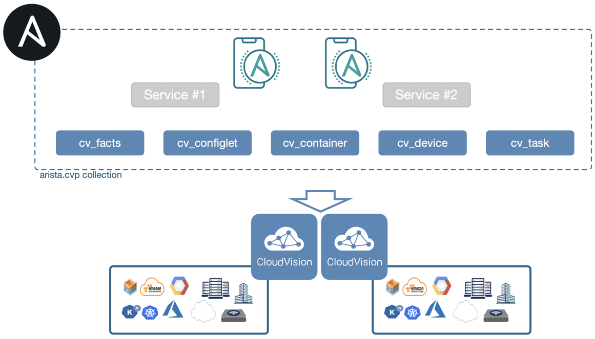

Ansible Modules for Arista CloudVision Platform#
All the CV communication are now managed by cvprac library. So a new requirements MUST be installed first before any code execution.
About#
Arista Networks supports Ansible for managing devices running the EOS operating system through CloudVision platform (CVP). This roles includes a set of ansible modules that perform specific configuration tasks on CVP server. These tasks include: collecting facts, managing configlets, containers, build provisionning topology and running tasks.

Requirements#
Arista CloudVision:
- CVP 2018.x.x: starting version
ansible-cvp 1.0.0 - CVP 2019.x.x: starting version
ansible-cvp 1.0.0 - CVP 2020.1.x: starting version
ansible-cvp 1.1.0 - CVP 2020.2.x: starting version
ansible-cvp 2.0.0
Python:
- Python 3.x
Additional Python Libraries required:
- python
3.6and higher - ansible >=
2.9.0 - cvprac version
1.0.4 - requests >=
2.22.0 - treelib
1.5.5 - jsonschema
3.2.0
Supported Ansible Versions: ansible 2.9 or later
Installation#
pip install requests>=2.22.0
pip install treelib>=1.5.5
pip install cvprac==1.0.4
Ansible galaxy hosts all stable version of this collection. Installation from ansible-galaxy is the most convenient approach for consuming arista.cvp content
$ ansible-galaxy collection install arista.cvp
Process install dependency map
Starting collection install process
Installing 'arista.cvp:1.1.0' to '~/.ansible/collections/ansible_collections/arista/cvp'
Complete installation process is available on repository website
Modules overview#
This repository provides content for Ansible’s collection arista.cvp with following content:
List of available modules:
- arista.cvp.cv_facts - Collect CVP facts from server like list of containers, devices, configlet and tasks.
- arista.cvp.cv_configlet - Manage configlet configured on CVP.
- arista.cvp.cv_container - Manage container topology and attach configlet and devices to containers.
- arista.cvp.cv_device - Manage devices configured on CVP
- arista.cvp.cv_task - Run tasks created on CVP.
List of available roles:
- arista.cvp.dhcp_configuration - Configure DHCPD service on a Cloudvision server or any dhcpd service.
- arista.cvp.configlet_sync - Synchronize configlets between multiple Cloudvision servers.
Example#
This example outlines how to use arista.cvp to create a containers topology on Arista CloudVision.
A dedicated repository is available for step by step examples on ansible-cvp-toi.
A complete end to end demo using Arista Validated Design collection and CloudVision modules is available as an example.
Below is a very basic example to build a container topology on a CloudVision platform assuming you have 3 veos named veos0{1,3} and a configlet named alias
---
- name: Playbook to demonstrate cv_container module.
hosts: cvp
connection: local
gather_facts: no
collections:
- arista.cvp
vars:
containers_provision:
Fabric:
parent_container: Tenant
Spines:
parent_container: Fabric
Leaves:
parent_container: Fabric
configlets:
- alias
devices:
- veos03
MLAG01:
parent_container: Leaves
devices:
- veos01
- veos02
tasks:
- name: "Gather CVP facts from {{inventory_hostname}}"
cv_facts:
register: cvp_facts
- name: "Build Container topology on {{inventory_hostname}}"
cv_container:
topology: '{{containers_provision}}'
cvp_facts: '{{cvp_facts.ansible_facts}}'
As modules of this collection are based on HTTPAPI connection plugin, authentication elements shall be declared using this plugin mechanism and are automatically shared with arista.cvp.cv_* modules.
[development]
cvp_foster ansible_host= 10.90.224.122 ansible_httpapi_host=10.90.224.122
[development:vars]
ansible_connection=httpapi
ansible_httpapi_use_ssl=True
ansible_httpapi_validate_certs=False
ansible_user=cvpadmin
ansible_password=ansible
ansible_network_os=eos
ansible_httpapi_port=443
As modules of this collection are based on HTTPAPI connection plugin, authentication elements shall be declared using this plugin mechanism and are automatically shared with arista.cvp.cv_* modules.
License#
Project is published under Apache License.
Ask a question#
Support for this arista.cvp collection is provided by the community directly in this repository. Easiest way to get support is to open an issue.
Contributing#
Contributing pull requests are gladly welcomed for this repository. If you are planning a big change, please start a discussion first to make sure we’ll be able to merge it.
You can also open an issue to report any problem or to submit enhancement.
A more complete guide for contribution is available in the repository